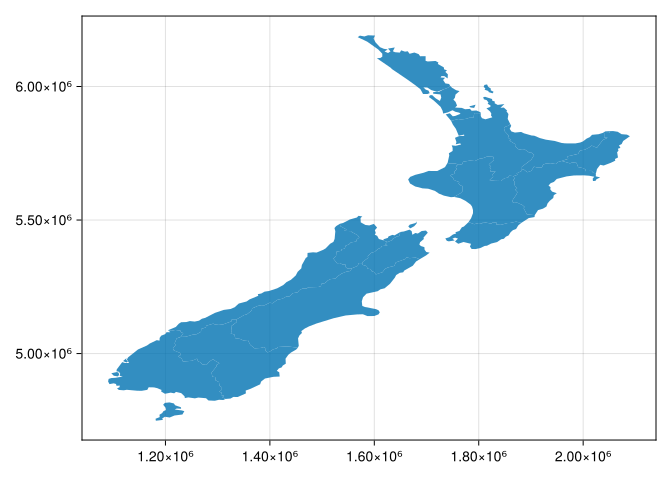

# We use the Makie.jl ecosystem primarily.usingCairoMakieusingGeoMakieusingTylerusingNaturalEarth# Natural Earth vector datausingGeoDataFrames, ArchGDALimportGeoInterface as GI, GeometryOps as GO, GeoFormatTypes as GFTimportLibGEOS# to activate some capabilities of GeometryOpsusingFlexiJoins# dataframe joinsusingRasters
WARNING: Method definition convert_arguments(MakieCore.CellGrid, Rasters.AbstractRaster{var"#s115", 2, D, A} where A where D where var"#s115") in module RastersMakieExt at /home/runner/.julia/packages/Rasters/JcYNY/ext/RastersMakieExt/plotrecipes.jl:304 overwritten at /home/runner/.julia/packages/Rasters/JcYNY/ext/RastersMakieExt/plotrecipes.jl:308.
ERROR: Method overwriting is not permitted during Module precompilation. Use `__precompile__(false)` to opt-out of precompilation.
A satisfying and important aspect of geographic research is communicating the results. Map making—the art of cartography—is an ancient skill that involves communication, intuition, and an element of creativity. In addition to being fun and creative, cartography also has important practical applications. A carefully crafted map can be the best way of communicating the results of your work, but poorly designed maps can leave a bad impression. Common design issues include poor placement, size and readability of text and careless selection of colors, as outlined in the style guide of the Journal of Maps. Furthermore, poor map making can hinder the communication of results (Brewer 2015):
Amateur-looking maps can undermine your audience’s ability to understand important information and weaken the presentation of a professional data investigation.
Maps have been used for several thousand years for a wide variety of purposes. Historic examples include maps of buildings and land ownership in the Old Babylonian dynasty more than 3000 years ago and Ptolemy’s world map in his masterpiece Geography nearly 2000 years ago (Talbert 2014).
Map making has historically been an activity undertaken only by, or on behalf of, the elite. This has changed with the emergence of open source mapping software such as mapping packages in Python, R, and other languages, and the “print composer” in QGIS, which enable anyone to make high-quality maps, enabling “citizen science”. Maps are also often the best way to present the findings of geocomputational research in a way that is accessible. Map making is therefore a critical part of geocomputation and its emphasis not only on describing, but also changing the world.
Basic static display of vector layers in Julia can be done with the plot function from Makie.jl, as we saw in Sections ?sec-vector-layers and ?sec-using-rasterio. Other, more advanced uses of these methods, were also encountered in subsequent chapters, when demonstrating the various outputs we got. In this chapter, we provide a comprehensive summary of the most useful workflows of these two methods for creating static maps (Section 8.2). Static maps can be easily shared and viewed (whether digitally or in print), however they can only convey as much information as a static image can. Interactive maps provide much more flexibilty in terms of user experience and amount of information, however they often require more work to design and effectively share. Thus, in ?sec-interactive-maps, we move on to elaborate on the .explore method for creating interactive maps, which was also briefly introduced earlier in ?sec-vector-layers.
8.2 Static maps
Static maps are the most common type of visual output from geocomputation. For example, we have been using static Makie.jl plots throughout the book, to display vector and raster data.
In this section we systematically review and elaborate on the various properties that can be customized when using those functions.
A static map is basically a digital image. When stored in a file, standard formats include .png and .pdf for graphical raster and vector outputs, respectively. Thanks to their simplicity, static maps can be shared in a wide variety of ways: in print, through files sent by e-mail, embedded in documents and web pages, etc.
In the Makie.jl ecosystem, there is not much difference between static and interactive or dynamic maps, since everything can be updated on-the-fly using Observables. We will show how to do this shortly.
Nevertheless, there are many aesthetic considerations when making a static map, and there is also a wide variety of ways to create static maps using novel presentation methods. This is the focus of the field of cartography, and beyond the scope of this book.
8.2.1 Minimal examples
A vector layer can be displayed by plotting its geometry.
A minimal example of a vector layer map is obtained using plot with nothing but the defaults (Figure 8.1).
plot(nz.geom)

Figure 8.1: Minimal example of a static vector layer plot with .plot
A Raster, or any Julia matrix for that matter, cna be displayed using any 2D plotting function, like heatmap or surface. Figure 8.2 shows a minimal example of a static raster map.
heatmap(nz_elev)
Figure 8.2: Minimal example of a static raster plot with heatmap
8.2.2 Styling
The most useful visual properties of the geometries, that can be specified in plotting functions, include color, strokecolor, and markersize (for points) (Figure 8.3).
Figure 8.3: Setting color and edgecolor in static maps of a vector layer
The next example uses markersize to get larger points (Figure 8.4). It also demonstrates how to control the overall figure size, such as \(1000 \times 1000\)\(px\) in this case, using the explicit Figure constructor to initialize the plot and its size parameter to specify size.
Figure 8.4: Setting markersize in a static map of a vector layer
Note
As you have probably noticed throughout the book, the plt.subplots function is used to initialize a maptplotlib plot layout, possibly also specifying image size (e.g., Figure 8.4) and multi-panel layout (e.g., ?fig-faceted-map). The returned value is a tuple of Figure and Axes objects, which we conventionally unpack to variables named fig and ax. These two variables represent the entire figure, and the elements of individual sub-figures, respectively.
For our purposes in this book, we have been using just the ax object, passing it to the ax parameter in further function calls, in order to add subsequent layers (e.g., ?fig-plot-raster-and-vector) or other elements (e.g., ?fig-plot-symbology-colors-r-scale) into the same panel. In a single-panel figure, we pass ax itself, whereas in a multi-panel figure we pass individual elements representing a specific panel (such as ax[0] or ax[0][0], depending of the layout; see ?sec-faceted-maps)
Note that in some of the cases we have used an alternative to plt.subplots—we assigned an initial plot into a variable, conventionally named base, similarly passing it to the ax parameter of further calls, e.g., to add subsequent layers (e.g., ?fig-two-layers); this (shorter) syntax, though, is less general than plt.subplots and not applicable in some of the cases (such as displaying a raster and a vector layer in the same plot, e.g., ?fig-plot-raster-and-vector).
TODO: translate this to Julia.
8.2.3 Symbology
We consider the following concepts to be “symbology”: - Legend - Color - Color map
For example, Figure 8.5 shows the nz polygons colored according to the 'Median_income' attribute (column), with a legend.
Talbert, Richard J. A. 2014. Ancient Perspectives: Maps and Their Place in Mesopotamia, Egypt, Greece, and Rome. University of Chicago Press. https://books.google.com?id=srTbAgAAQBAJ.